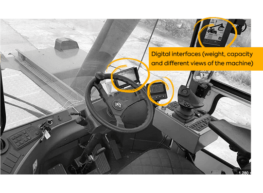
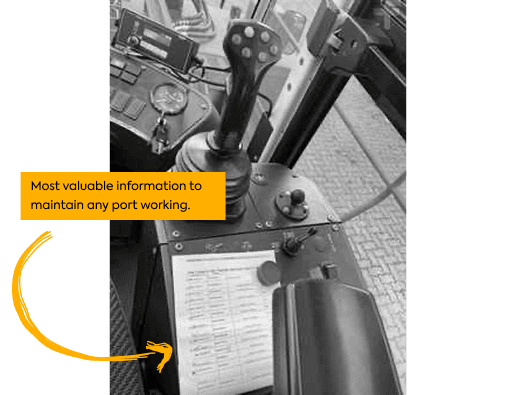
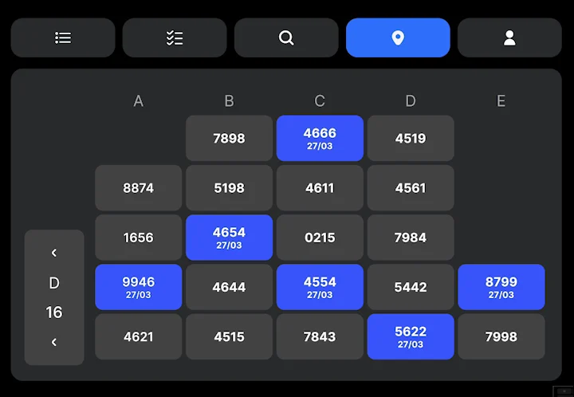
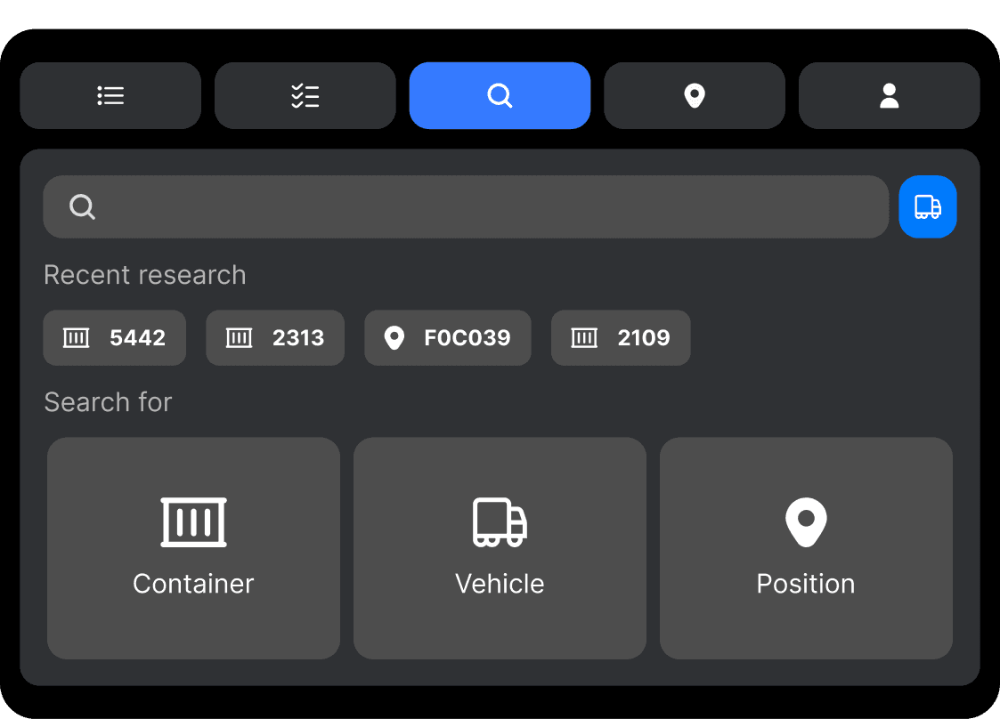
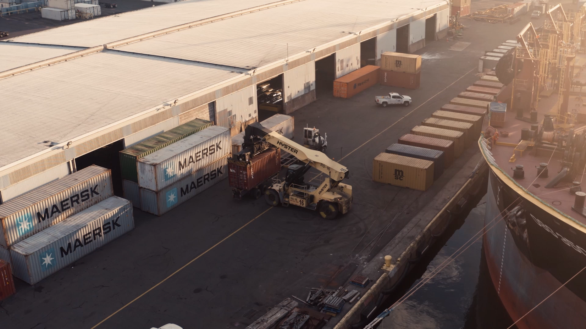

Designing an operator experience that remains in daily use
As Loopt’s sole designer, I created the operator application from scratch, bringing changing instructions, container positions, and task sequences into one operational workflow.
First released in May 2023, the experience continues to support daily operations today.
My role
Staff Product Designer · Sole designer
Product
Responsive web application for container-yard operators
Contribution
Research, workflow definition, interaction design, interface design, and post-launch refinement
From the service queue to the next container movement.
The challenge
The yard kept changing. The instructions struggled to keep up.
The operation behind the interface
A container terminal stores and moves containers while they await collection, inspection, or other services. Inside its yard, containers are stacked, so accessing one almost always requires moving several others first.
Each additional movement takes minutes and consumes fuel, equipment capacity, and labour. A placement decision today can create unnecessary work hours or days later.
Loopt uses AI to coordinate service sequencing and container placement. It integrates with the terminal’s existing management system and sends instructions directly to the operators moving the containers.
My responsibility was to design the experience through which those instructions became daily work.

The application needed to coexist with the machine’s controls and other displays.
The starting point: instructions that struggled to keep up
Operators’ tools varied across terminals.
Some used paper lists with services, deadlines, and the last recorded location of each container. As the operation changed, those lists accumulated handwritten corrections. Strong winds could carry them away; rain could make them unusable.
Others worked with tablet applications displaying dense rows of tiny text. In some systems, an accidental tap could advance the screen without a way to recover the previous instruction.
Operators then had to ask yard coordinators for the destination by radio. Under operational pressure, some placed containers elsewhere without recording the location, reducing traceability and making the yard less predictable.
The challenge was to create a clear workflow that preserved essential instructions, accommodated changing conditions, and supported operators’ judgement.

Instructions had to survive the conditions inside the cab.
Fieldwork connected individual tasks to the wider operation.
Research at the point of work
Understanding what operators already knew.
30+
Interviews with operators, analysts, and supervisors
2 weeks
On site alongside the CEO and a machine-learning specialist
Remote research built the foundation. Fieldwork connected the pieces.
I conducted more than 30 interviews with operators, analysts, and supervisors. Remote research gave me a detailed understanding of their responsibilities, tools, communication practices, and priorities.
I then spent two weeks at a terminal alongside the CEO and a machine-learning specialist.
Fieldwork revealed how those individual perspectives connected. One container movement affected access to other containers, upcoming deadlines, and the work of subsequent shifts.
This deepened my understanding of the design problem: each task belonged to an evolving operation. The interface needed to support the immediate action while making its wider sequence understandable.
Operator expertise
What felt natural was learned expertise.
Operators described knowing what to do naturally.
Observing their work revealed the knowledge behind that description. They connected container dates and weights, surrounding stacks, and placement requirements. Refrigerated containers requiring power, for example, introduced different constraints from empty ones.
What felt natural to an experienced operator contained relationships learned over time.
As Herbert A. Simon wrote:
“Intuition is nothing more and nothing less than recognition.”
My approach was to make relevant information available at the moment of action, so operators could apply that expertise alongside the model’s recommendations.
Run a service, inspect its placement instruction, and confirm the movement.
Workflow architecture
From recommendations to an executable workflow.
The flow connects service execution, position recommendations, alternative placements, skipped containers, and access to upcoming work.
Run service user flow
Hover or focus a step to follow its journey. Tap a step on touch screens.
Completing a service could require several movements before the target container became accessible. The sequence needed to account for its deadline, the time required for each movement, and the future deadlines of containers blocking access.
I organised the experience around that sequence. Execution screens focused on the current container, while progress indicators showed how many steps remained.
Distinct visual states identified skipped containers, which could indicate a discrepancy between the recorded location and the physical yard.
The workflow made room for both planned execution and the exceptions operators encountered in practice.
Operators could follow the immediate instruction and inspect the work ahead.
Make the dependency visible: clearing access is part of completing the service.
02 · Keep the instruction available
The destination stays visible until confirmation.
On the execution screen, the action to advance displayed the recommended placement. I retained a separate confirmation step so an accidental tap would not immediately replace the destination with the next container’s information.
This decision came from observing how lost instructions disrupted the work. Keeping the destination available until confirmation addressed that failure before the operator moved on.
Operators could also request a new recommendation, inspect upcoming movements, or reject a suggested position and report their chosen alternative.
These options supported informed execution while allowing operators to respond to conditions the recommendation needed to account for.
A deliberate confirmation protected the instruction while preserving the operator’s judgement.

Navigate the yard by bay, select a container, and inspect its movement instructions.
03 · Support work beyond the queue
A yard view shaped by the people using it.
After launch, operators requested a view of the yard’s current state before executing services.
We added a yard visualisation that also allowed them to initiate container movements themselves.
I observed operators using it to prepare the yard for upcoming days, particularly during night shifts. They assessed positions and reorganised containers to make the following day’s services easier to execute.
The application’s role expanded beyond immediate instructions. It supported preparation across shifts and the different operating practices of each terminal.
The application grew from immediate instructions into a tool for preparation across shifts.
A move made this shift can make the next shift’s work easier.
Following the first release in May 2023, I continued observing operators, reviewing usage through Microsoft Clarity, and incorporating feedback.
Requests often arrived as proposed solutions, such as adding a button. I investigated the underlying task before deciding how a change should fit into the workflow.
The yard visualisation became a concrete example of this process: operator input introduced a capability that supported work beyond the original service sequence.

Search screen and keyboard-trigger scenarios.
Reported business outcomes
Less wasted movement. More useful work.
Customer interviews describe benefits across operating costs, service delivery, working conditions, and staffing. These outcomes reflect the broader Loopt implementation, combining optimisation, operational changes, and the application used to execute the work.
≈50%fewer
Unproductive movements
Less unnecessary container handling, freeing time and equipment capacity for the work that needed to happen.
Approximate reduction reported in a customer interview.
33,000 Lsaved
Diesel in one month
Lower fuel consumption as fewer unnecessary movements were made across the operation.
Reported in Loopt’s published Transbrasa case.
Operational and financial benefits
Approximately 50% fewer unproductive movements Reported in a customer interview.
33,000 litres of diesel saved in one month According to Loopt’s published Transbrasa case.
Lower operating costs With interviewees describing savings from fewer movements and reduced maintenance and tyre wear.
More reliable appointment fulfilment With Ecoporto’s operations manager reporting greater confidence in delivering planned services.
Simpler export organisation Grouping containers by vessel rather than individual booking to reduce separate stacks and additional movements.
Benefits for operators and teams
Direct access to instructions Including the work queue and recommended positions.
Less dependence on coordination by radio Allowing operators to consult and execute service orders directly.
Visibility into upcoming work Supporting understanding of the task sequence.
Less fatigue and a calmer yard Described as consequences of fewer movements and better organisation.
Staff reassignment without dismissals at Ecoporto Where people were moved to other activities that needed additional support.
Environmental benefits
Lower diesel consumption Supported by the reported fuel savings.
Lower CO₂ emissions Described in the interviews as a benefit of reducing equipment movements.

The terminal environment in which the operator application is used.
Evidence of continued use
Operator feedback became part of daily work.
The application remains in operational use, retaining the interface structure I originally designed.
Analytics from one client for the 30-day period ending 9 October 2026 show:
5,893
Recorded sessions
62.16%
Sessions accessing the yard view3,663 recorded sessions
4,249
Sessions with position confirmation
The same session can include both activities; these counts overlap.
The yard view provides the clearest connection between operator feedback and continued use: a capability requested after launch now appears in more than six out of ten recorded sessions at this client.
Customer testimony adds context to those numbers. Ecoporto’s operations manager described operators receiving their queue, understanding the recommended position, and executing services without contacting a controller for each instruction.
My contribution was to create the experience supporting that execution: understandable sequences, persistent instructions, visibility into the yard, and room for operational judgement.
What I would revisit today.
As a web application, Loopt also gave terminals more flexibility to use phones alongside tablets.
Today, I would revisit information density, navigation, and spatial orientation around smaller screens and their use in the cab. Continued operation provides a richer basis for those decisions than we had at the initial release.
The experience I created established the foundation. Its sustained use—and the ways operators extended it into their working routines—provides evidence for its next stage of improvement.